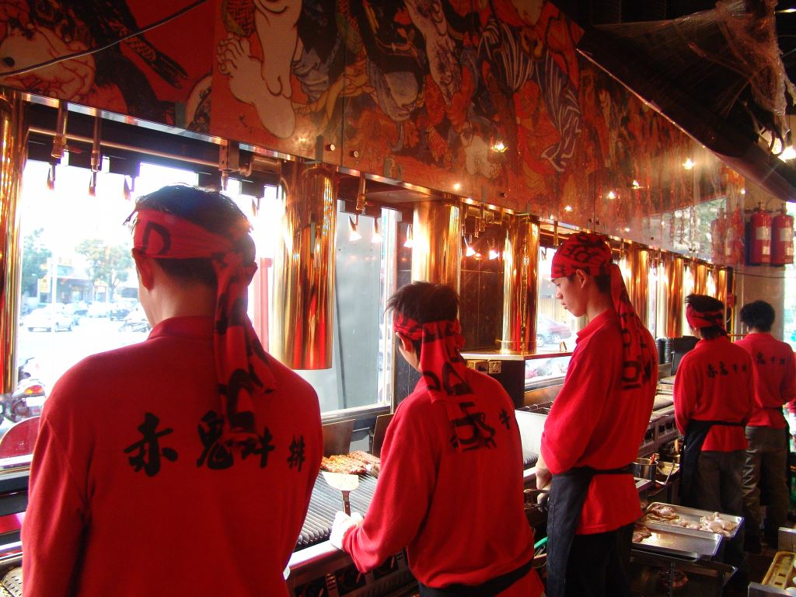
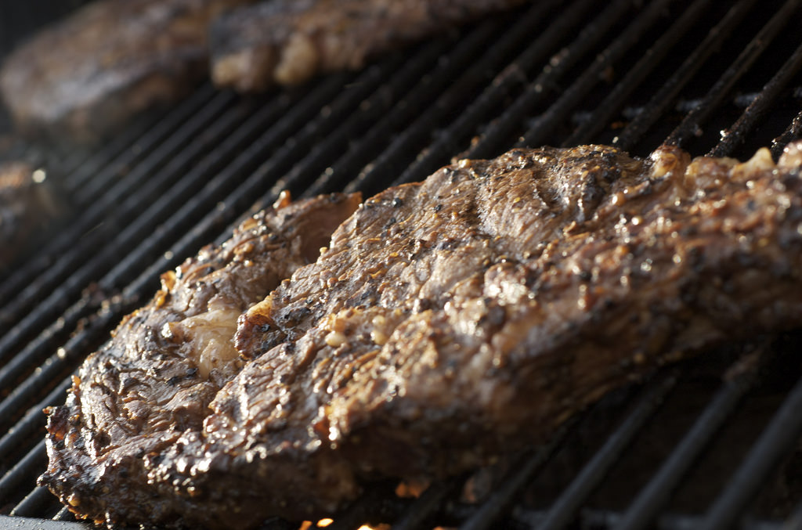

About 關 於 我 們

「赤鬼牛排」是一家主打排餐的餐廳，
創立於2005年11月16日，由喜愛牛排料理的陳店長夫妻攜手規劃與成立。
雖然我們成立的時間不久，但是，我們的陳店長可是擁有十餘年的牛排餐飲服務經驗！
初期創立期間，工作團隊經由不斷地討論、規劃與研發，特別開發出獨具風味的「赤鬼牛排」
招牌特餐 –無骨牛小排，由牛背肩的下間胛肋眼心、下肩胛翼板和下肩胛襯底板三種肉塊所構成，嫩中帶微硬、有彈牙的滋味，
且多油多筋，一吃就有三種部位的感受，特別適合喜歡豐富口感的饕客，並透過精心調配的醬料，讓所有的客人能品嚐到別的牛排店吃不到的──嚴選加大盎司排餐。
此外，我們在2012年所研發出來的岩燒牛排，也是我們的人氣排餐之一，它的石板來自於澳洲的火山岩板，具有最天然的結晶，經由特殊烤箱在高溫400度下連續加熱5小時，搭配每日由主廚堅持嚴選的食材，交織出最原始的美味。
透過天然岩板獨有的特性，迅速加熱以鎖住食材的表層水分，將食材呈現外酥內嫩，同時保留原有的甜味。
